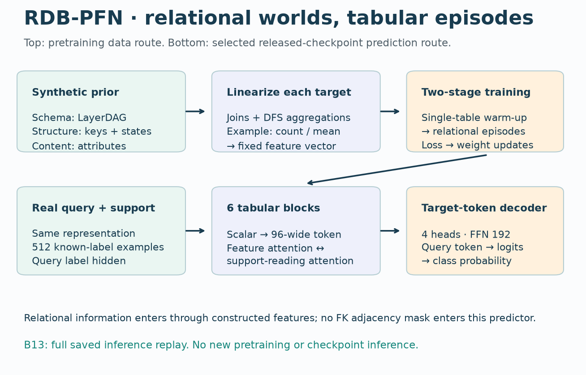
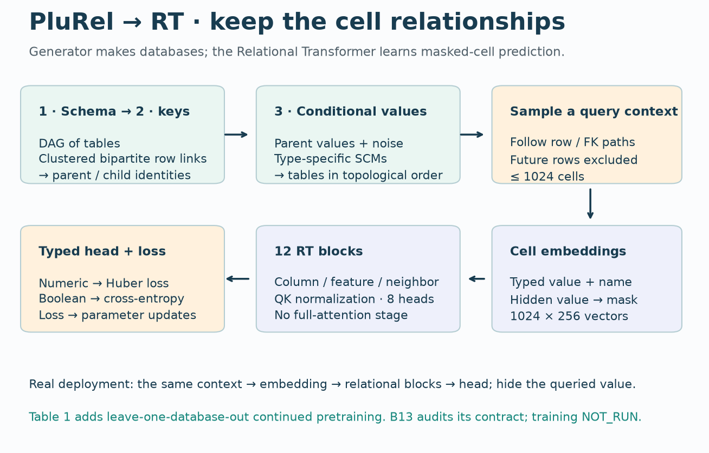
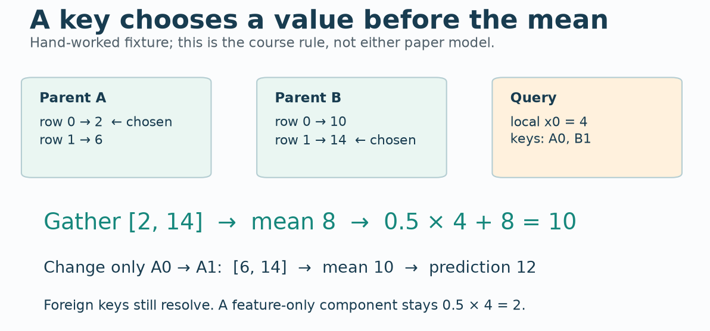
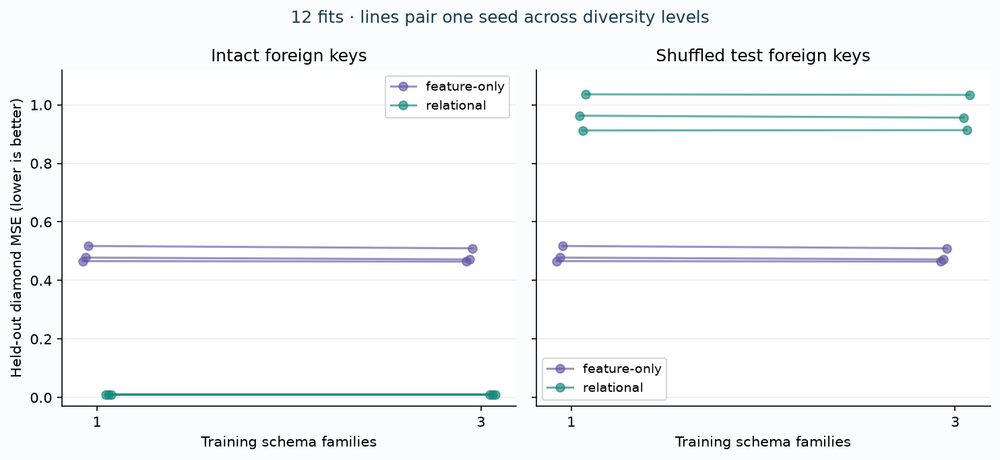

B13 · Two roles for synthetic relational data¶
Research bridge · RDB-PFN and PluRel · generation → representation → learner
Your win: trace exactly where a synthetic database enters a predictor, then design a held-out-schema test that cannot be passed by renaming tables.
B12 asked how a new task reaches an already trained model. It left a prior question open: where did that model learn its transferable behavior? RDB-PFN and PluRel both manufacture relational training data, but send those data through different representations. That difference determines what the learner can see. This matters to our mission: a claim that relational learning beats a flat baseline needs an identifiable learned contribution.
Route: read sections 1–4 for the mechanism; use sections 5–7 and the lab for evidence. Bring a written explanation back to the teaching agent. A completed author package does not complete your defense.
See the idea · then trace the details
Synthetic relational tasks: follow structure into the training table
Synthetic relational structure enters through generated tasks and relational features.
1Generate linked records
Synthetic schema + foreign keys + table contents
Pretraining samples relational databases and prediction tasks. These generators determine which dependencies the learner practices.
2Construct relational features
Related records → DFS aggregates → feature table
Deep Feature Synthesis turns relational neighborhoods into tabular attributes such as counts and means. The released checkpoint receives this feature matrix, not raw graph edges.
3Predict from labeled support
Feature tokens + support labels → query logits
The transformer mixes features and support rows. Query labels remain hidden; a decoder reads the query label token. Evaluation uses fixed pretrained weights.
Pause and predict: Is the released checkpoint passing GNN messages along foreign keys during this forward pass?
No. Its input is the released feature matrix. Relational feature construction and transformer inference are separate stages.
Answer: No. Its input is the released feature matrix. Relational feature construction and transformer inference are separate stages.
1 · Three objects that are easy to confuse¶
A schema describes tables and their relationships. A primary key identifies a row within a table. A foreign key stores the identity of a row in another table. Here an arrow parent→child means that the child stores the foreign key. The schema graph therefore differs from the graph of individual connected rows.
A structural causal model (SCM) generates a variable by applying a function to its parents and independent noise. In a synthetic generator, this is a chosen assumption about how values depend on each other. It is not a discovery of real-world causality.
In plain terms. A generator makes practice worlds. A representation decides which parts of those worlds reach the learner. A learner changes its parameters during training, then uses its inputs to make predictions.
| Object | Question to ask | Example |
|---|---|---|
| Generator | What dependencies can it manufacture? | Parent values influence child attributes |
| Representation | What survives conversion into model inputs? | A mean over related rows, or separate cell tokens |
| Learner | What operation fits/predicts from those inputs? | Tabular in-context attention, or relational cell attention |
A relational generator does not imply graph-native inference. Graph-native here means inference explicitly retains row/cell relationships in its computation. A relationally derived fixed feature vector is a different representation. Neither representation is automatically better on every task.
2 · RDB-PFN: a relational prior, then linearization¶
Read RDB-PFN v1 §§4–6 and Figure 1, then compare the v5 version used for our numerical target. Section and table numbers are version-specific.
Generate the practice tasks¶
The paper separates schema, structure, and content generation. The schema component uses LayerDAG, a learned directed-acyclic-graph generator. A DAG has directed edges and no directed cycle. The structural component creates relational connectivity and latent row states; the content component generates attributes conditioned on that structure. This is richer than independently drawing several unrelated tables.
The training curriculum first develops a statistical backbone on single-table tasks, then adapts it to relationally derived tasks. An episode is a support set with known labels plus queries whose labels must be predicted. Training computes a loss on query labels; inference hides those labels.
Model architecture · from database to probability¶


- Generate schema, row connectivity and conditional attributes.
- Linearize relational neighborhoods into fixed feature vectors.
- Pretrain on labeled-support / hidden-query episodes.
- Real task: construct the same representation; normalize from support only.
- Scalar and target tokens → six feature/example-attention blocks → query target decoder.
Linearization converts each target entity's relational neighborhood into a fixed-length vector. Deep Feature Synthesis (DFS) composes joins and aggregation operators, such as counts or means, along declared relationships. The model sees the resulting columns rather than receiving the original foreign-key graph as an inference-time attention mask.
For the selected released model, each scalar feature becomes a 96-dimensional token. Support-derived normalization prevents the query population from determining preprocessing statistics. Labels enter a separate target token for support rows; query targets are hidden. Six blocks alternate attention across feature tokens and across examples. In the latter direction, support rows supply the readable keys/values. The query target token passes through a decoder to class probabilities. The archived model has 4 heads and a 192-wide feed-forward layer; those are the released checkpoint dimensions, not a claim about every appendix variant.
What is learned? The transformer weights learn from synthetic episodes. What is engineered? The relational-to-tabular representation decides which aggregates the transformer receives. If two neighborhoods have identical retained counts and means but differ in an omitted property, this representation cannot let the learner distinguish that property.
Scope check. The notebook includes the full visible selected RDB-PFN model and executable source evaluator. B13 replays saved checkpoint predictions; it does not rerun synthetic pretraining, LayerDAG training, or full DFS construction.
3 · PluRel: generate databases for a relational learner¶
Read PluRel v1 §2, Figure 2, and §3. PluRel is a generator framework; RT is the learner used to test it. This distinction remains useful even if a future learner consumes the same generated databases.
Three stages, two graph scales¶
Schema stage. Sample a directed acyclic schema and row/column counts. The published implementation does not support schema cycles. A generated table graph describes possible table relationships, not the exact row connections.
Foreign-key stage. Populate links between parent and child rows. A bipartite graph connects two disjoint sets of nodes, here rows from two tables. PluRel uses hierarchical block structure to create clustered connectivity. This lets fanout and locality vary instead of forcing every child to choose a uniformly random parent.
Value stage. Visit tables in topological order, so a parent's values exist before a child needs them. Numeric and categorical values are projected into a common latent space, combined with parent information and noise, then reconstructed into their original types. Temporal source inputs can include trends, cycles, and fluctuations. Acyclic generation is a practical constraint, not evidence that enterprise databases cannot contain cycles.
Model architecture · masked cells remain relational¶


- Generate an acyclic table schema, clustered row links and conditional values.
- Sample a query-centered, temporally filtered context of at most 1024 cells.
- Embed typed values and names; replace the hidden target with a mask.
- Twelve blocks use column, feature and neighbor attention; QK normalization, no full attention.
- Typed heads predict masked values; pretraining updates weights. Table1 compares real-only and synthetic-initialized continued pretraining.
A token is one model input position; RT uses cells as tokens. A sampler follows foreign-key relationships from a query row, filters future-dated rows, and stops at a 1024-cell budget. A typed value embedding combines with table/column-name information. A masked target gets a learned mask embedding instead of its hidden value.
In the PluRel paper configuration,12 blocks operate on 256-wide vectors with 8 attention heads. Column attention reads cells in the same column. Feature attention reads the same row and linked parent rows. Neighbor attention reads linked child rows. These masks preserve distinct relational paths. The paper removes the unrestricted full-attention stage and normalizes queries and keys to stabilize training. A type-specific head predicts the masked value: classification uses cross-entropy, while numeric prediction uses Huber loss, which is quadratic near zero error and linear for large errors.
Synthetic-only means train on generated databases and then evaluate. Synthetic+Real means continue pretraining on real databases after synthetic pretraining. For Table 1, the evaluated database is excluded from this continued training. Real-only trains the same comparison architecture on the other real databases from random initialization. The selected task checkpoint comes from validation, not the test score.
Scope check. The preserved paper source is available. The current Hub root model is a later release, and its task-specific leaderboard checkpoints do not automatically reproduce the original three-seed Table 1 protocol. Read the pinned source and deviation ledger before using them.
4 · A worked trace: keep the key, change the value read¶
Worked example. ParentA contains scalar values[2,6]. ParentB contains[10,14]. A query has local feature x0=4 and keys selecting A row 0 and B row 1. The parent mean is(2+14)/2=8. Our course target's noise-free rule gives 0.5×4+8=10. Changing the Akey to row 1 gives(6+14)/2=10, hence prediction 12.


The three-row checker extends this trace: Akeys[0,1,1], Bkeys[1,0,1] produce parent means[8,8,10]. A join must gather by the keys; simply averaging each whole parent table gives the wrong answer.
Predict, then change one key
Query x0=4 and parent values stay fixed. This is an arithmetic illustration, not a fitted prediction.
The feature-only rule cannot see a foreign-key intervention. The relational feature rule can. That demonstrates information access, not a learned relational architecture. The target rule was deliberately chosen to depend on the parent mean.
5 · Hold out structure, not spelling¶
A fresh database seed changes sampled values and links. It does not necessarily create a new schema. Two schemas are isomorphic when a one-to-one renaming of their tables preserves every directed edge. A schema holdout must reject these renamed copies too.
Does a new name create a new schema?
Our exact checker tries all 24 renamings of four tables and chooses a canonical sorted edge list. A chain, out-star, in-star and diamond have distinct identities under this test. This factorial-time check is for tiny teaching graphs, not a scalable production graph-isomorphism algorithm. With real typed schemas, structural identity alone is only one part of a holdout policy; table types, shared source families and provenance can matter too.
Three different budgets. More schema families change structural variety. More databases can add new parameter draws even with the same schema. More rows/cells increase available observations. PluRel's paper varies database count and pretraining-token count separately. Our course experiment fixes 12 databases and 12,288 numeric feature cells per training arm, varying the number of schema families. Those are related questions, not identical experiments.
6 · Run the controlled experiment before making a scaling claim¶
Held fixed: three paired seeds,12 training databases per arm,4 tables×64 rows×4 attributes per database, the target rule, ridge penalty 1, training-only normalization, and the same 256 held-out queries per seed. Ridge regression fits a linear predictor with a penalty on squared coefficient size; the intercept is not penalized.
Varied: one schema family versus three, and query attributes alone versus query attributes plus the parent mean. Four new diamond databases form the test set; no test labels enter fitting or tuning. Training has 3 edges per schema while diamond has 4, so the holdout also changes connectivity degree. Keys and target-label cells are additional to the stated numeric-feature budget and are counted in the contract.
Measured: mean squared error (MSE) averages squared prediction errors over every test query. We retain all 3,072 intact predictions and 3,072 additional predictions after shuffling each target-table FK column. Each shuffle preserves the key multiset, so all keys still resolve and parent fanouts stay fixed. Ground truth and trained coefficients do not change. These extra predictions require no refitting.


All measured seeds
Each line shows intact → shuffled-FK MSE. Lower is better; no refitting after the shuffle.
feature-only · 1 training family
- Seed 0: 0.46603 → 0.46603
- Seed 1: 0.47803 → 0.47803
- Seed 2: 0.51777 → 0.51777
feature-only · 3 training families
- Seed 0: 0.46451 → 0.46451
- Seed 1: 0.47188 → 0.47188
- Seed 2: 0.50972 → 0.50972
relational · 1 training family
- Seed 0: 0.01021 → 0.96294
- Seed 1: 0.01049 → 0.91246
- Seed 2: 0.00920 → 1.03596
relational · 3 training families
- Seed 0: 0.01026 → 0.95624
- Seed 1: 0.01048 → 0.91362
- Seed 2: 0.00921 → 1.03386
The same three seeds are paired across the two diversity levels. The relational diversity changes are small and mixed.
| Predictor | Training families | Intact MSE mean ± SD | Shuffled-FK MSE mean ± SD |
|---|---|---|---|
| feature-only | 1 | 0.48727 ± 0.02708 | 0.48727 ± 0.02708 |
| feature-only | 3 | 0.48204 ± 0.02426 | 0.48204 ± 0.02426 |
| relational | 1 | 0.00997 ± 0.00068 | 0.97045 ± 0.06209 |
| relational | 3 | 0.00998 ± 0.00068 | 0.96791 ± 0.06096 |
Measured author evidence. SD uses three seed values; it is not a confidence interval. Lower MSE is better.
Interpretation. Adding the parent-mean feature greatly improves this constructed task. Shuffling the foreign keys destroys that advantage. Increasing training schema-family diversity does not consistently improve the relational arm. The feature-only arm improves slightly across these three seeds, but the changes are small and this is one constructed target family.
Why no robust diversity gain? The readout already computes the sufficient parent statistic, and the same linear equation governs training and test. This makes a new topology easy without learning a new structural rule. It is evidence about this controlled representation, not a refutation of PluRel's scaling results and not proof of RFM transfer.
Scope check. These are three seed values on one synthetic design. SampleSD is descriptive variability, not a confidence interval. Real-database transfer, general superiority and whole-paper reproduction remain untested here.
7 · Full reproduction: name the result and its boundary¶
RDB-PFN · complete selected saved-evidence replay¶
The selected target is v5 Table 9, rel-f1/driver-dnf, three released-model configurations × ten paired 512-row supports × 702 queries. The new pairwise AUROC audit reconstructs the support draws, authenticates complete(driverId,date)keys, checks every receipt, and rescores all 21,060 predictions. AUROC is the fraction of positive-negative pairs ranked correctly, with half credit for ties.
| Released configuration | Replayed AUROC mean ± SD | v5 paper target |
|---|---|---|
| RDBPFN | 0.721938 ± 0.019983 | 0.7219 |
| RDBPFN_single | 0.663990 ± 0.034177 | 0.6640 |
| TabICLv1.1 | 0.717568 ± 0.009770 | 0.7176 |
Ten support draws on one fixed test population; SD is across supports. All means are within the predeclared descriptive tolerance 0.02.
These are the same immutable predictions freshly generated in L200; they are not new B13 inference. The released target orientation is opposite the current raw DNF indicator. Numerical agreement does not certify full DFS provenance or historical feature availability. Ten support draws on one test population do not count as ten independent datasets.
PluRel · full Table 1 contract, execution gated¶
The target retains all 18 tasks and three seeds for Real-only and Synthetic+Real. This means 36 leave-one-database-out training runs and 108 task/arm/seed evaluations, plus synthetic-base pretraining if reconstructing it from scratch. The base uses 1,024 synthetic databases and 4B tokens. This scope is separate from the full scaling grid.
We located the official source, author-designated paper tag, generator, sampler, model, trainer and synthetic checkpoints. But the public scripts specify seed 0; the complete three-seed historical mapping is unresolved. The Hub card describes later continued/finetuned checkpoints selected with validation NMAE for regression, which is not Table 1'sR² selection. The paper source uses a linear learning-rate schedule; the later card describes cosine. Those differences forbid silently substituting the later run.
Published Table 1 numbers are preserved for all 18 tasks in the source packet, clearly marked as published targets. B13 does not run those training jobs or download their weights. Status: INCOMPLETE_SOURCE_PROTOCOL_AND_BUDGET_GATE. The full scripts remain readable and executable once their prerequisites and budget are satisfied; we have not manufactured missing seeds.
Budget and evidence: USD 0 paid execution;3,600 aggregate local execution seconds. Full protocol, commands and deviations · course result · RDB-PFN replay · PluRel target inventory.
8 · Lab and defense¶
Student notebook · executed solution · printable reference.
PROVIDED: transparent generator, full experiment runner, independent scorer, portable source/evidence packets and paper-model/trainer appendices. TODO: implement exact schema identity, the parent-key gather, and ridge fitting. CHECK: hand arithmetic, renamed-schema rejection, target interventions, all 12 fits and the complete 30-evaluation replay. EXIT: explain the result and its limitations in your own words.
Submit four short answers: (1) trace both pipelines; (2) explain why changing table names is not a schema holdout; (3) diagnose why relational schema diversity did not consistently help here; (4) list what is still required to claim full Table 1 reproduction. Propose a harder follow-up that removes the sufficient-statistic shortcut without leaking test labels. Do not run it under this lesson's approval.
Revisit tomorrow, in 7 days and in 30 days: redraw the two pipelines from memory and recompute the parent-mean trace. Ask the teaching agent about anything unclear; bring your written defense for feedback. Learner status: PENDING_WRITTEN_DEFENSE.
Bridge to B14. If a fixed relational-to-tabular representation can already expose the right statistic, how strong is a flattening baseline? B14 will examine RDBLearn and TabPFN-Rel. The right comparison must separate feature construction from what the backbone learns.
Previous: B12 · Earlier: B10 · L166 · L200 · Next: B14 plan